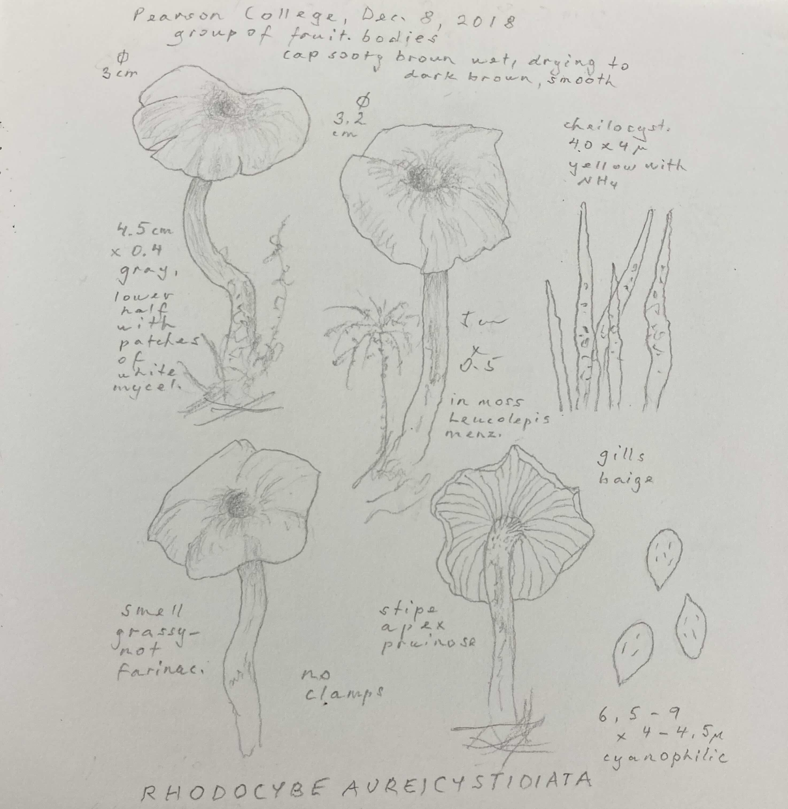

2025-04 | mostly Facts About Animals
The days are over 13 hours long, which is also about how much I sleep right now. Victoria is such a specific place — the
whole city feels like a botanical garden but also there’s a four lane highway going through the middle of it and there’s a
Hells Angel sitting outside the grocery store with his Pomeranian every day (I assume it’s a Hells Angel; the Hells Angels
typically take decisive sanctions against people who wear Hells Angels motorcycle jackets without being in the Hells Angels).
I am continuing my incidental strategy of having giant holes in my knowledge of films and books until someone my friends really
like dies and then catching up much later than everyone else. Which is to say, we’ve been watching Twin Peaks.
I have been enjoying the Nefarious Russians xx. Evgenia Kovda’s essay Against Nihilism, though it’s partly responding specifically
to various New York tendencies that luckily are not my problem, makes good points against various dead ends. She and her husband,
the journalist Yasha Levin, have a podcast that’s unprofessional in a good way, which is that it’s often a 2 hour talk between them
in which they hash out various points of view — some of which I quite disagree with, but the ease with which they argue them is refreshing.
It is in general an interesting space when creative partners are also life partners or otherwise close people. My partner and I
do very different types of science but are both employed in fundamental research, and it brings with it both a closeness (how
do you think about problems? did you know about this python thing you can do?) and difficulty (everyone cares a lot about what
they do and often it’s going vaguely badly*, and also of course the fundamental problem of simultaneously finding people to pay both
of you to do science, which has resulted in too many long distance flights and various strife). This month I went to I.’s research
symposium, where talks ranged from “we used an AI called MEGADETECTOR to find bears” to “how do mice see peripheral motion?”,
and the excitement of people about their work was near-tangible, and rare. (At the same time, the same department had someone
collapse from exhaustion on the floor of one of the facilities recently. Maybe north American science grad students aren’t first on
the overall list of the exploited, but explicit codification of labour standards would be a good idea, because “hoping my boss
is reasonable” is, while always nice, not a strategy.)
* a helpful thing someone once said to me about this: "the thing about being on edge of things is that you're constantly failing".
He later became one of the first people to
really get a good look at antihydrogen,
so I guess he knew what he was talking about.
From the same symposium: a study
about how if you play Eine Kleine Nachtmusik to crabs, it may help them cope
with adolescence better. (The study, of course, mentioned the economic implications of this phenomenon.)
More Facts About Animals: As far as anyone can tell, the most plausible answer to “what are the seals doing on Lake Baikal?”
seems to be
"They swam there from the sea."
Don’t underestimate the curiosity of a seal?
Speaking of creative partner teams, J told me about the
Oluna and Adolf Češka collection
at UVic. Oluna and Adolf Češka emigrated from Prague to Victoria in 1969 and spent the next fifty years here as
mycologists and botanists, doing a vast number of surveys of flora and fungi all around the Pacific Northwest.
Oluna Češka’s field journals and botanical illustrations are a part of the university library’s special collection,
and I went to go look at them - a testament to a life spent paying attention.

Laterally related: This
profile
of the creative/life partnership of Irena and Vojtěch Havlovi by Miloš Hroch for The Quietus was a true pleasure (as is basically
anything MH writes for the Quietus, and in general, I go to the Quietus when I want to hide by looking through a window into someone
else’s microcosmos).
Should we join the NDP? {lol/not lol}
@canada.gov.ca remains a true Canadiana meme treasure-trove.
This month he also put together
exodus hiver,
a playlist of songs for spring which I liked and which includes both obscure Acadian tracks and Leonard Cohen deep cuts.
Maybe I’m just someone who listens to Charlotte Cornfield all of the time, really, but spring really
seems to be CC season. The idyllic, generous melodies set against casual delivery of gently unsettling lyrics:
I think I'm scared of you, but that's all in my head
Your messy hair, your day-old clothes, your unmade bed
exodus hiverI see myself in you and that's the source of my dread
Happy May!